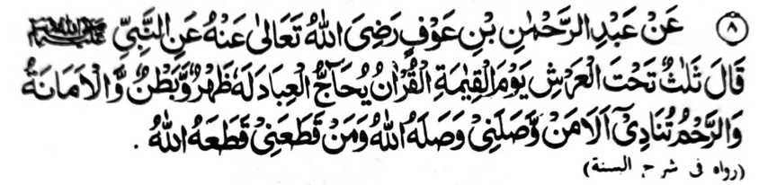
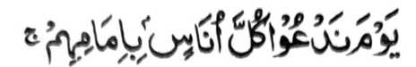
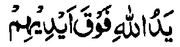
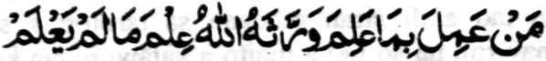
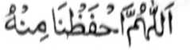

Miyakathitayan ko Abdur Rahman bin ‘Auf (Radhiallaho ‘Anho) a pitharo iyan a pitharo o Nabi (Sallallaho ‘Alaihi wa Sallam), “Telo a matatago ko atag o ‘Arsh ko Gawi-i a Qiyamah:
- Paganay ron na so Qur’an a pagewakilan niyan so oripen go aden a mapayag ago masolen a ma-ana niyan;
- ikadowa so Amanah (sarig);
- na ikatelo so kathotonganaya a gi-i mamangeni [ko Allah] sa, ‘Ompiya-an o Allah si tao a miphorong raken ago binasa-an Niyan so tao a pizapotol ako niyan.’”
So katatago angkoto a telo a nganin ko atag o ‘Arsh na mitotoro iyan so taman a karani ran si-i ko Allah. So kapagewakil o Qur’an na aya ma-ana niyan na zapa-aten niyan so manga tao a pembatiya-on ago ininggolalan niran so manga sogo-an niyan. Thabangan niyan siran ago phangeni niyan a miporo so daradat iran.
So Mulla Ali Qari na miyapanothol iyan a miyakathitayan ko Tirmidhi (ped ko manga kitab a kasosoratan sa manga Hadith) a, si-i sa hadapan o Allah, na so Qur’an na phangeni sa kabegan sa zokoba a nditaren so tao a pembatiya-on. So Allah na began niyan sa sangkad a kiyabantogan. So Qur’an na mangeni peman sa kaomanan so limo a bagi-an angkoto a tao. Oriyan niyan na began sekaniyan o Allah sa zokoba a nditaren a tanto a kababantogan. Pangenin peman o Qur’an a maso-at rekaniyan so Allah, na ipayag o Allah a miyaso-at Sekaniyan si-i rekaniyan.
Si-i sangka-iya kapaginetao sa donya na so kaso-at reketa o tao a pekhababaya-an ta na tanto a mazisingayo a pamemegayan. Sakamaoto mambo, a si-i sa Alongan a Maori, na da-a a limo a ba niyan malagid so kasoso-at o Pekhababaya-an tano a Allah. So peman so manga tao a inindaramon iran so kabenar kiran o Qur’an, na phangoragisan niyan siran: “Ino ba ko niyo siniyap? Ino ba niyo minitoman so kabenar aken rekano?”
Miyapanothol a miyakathitayan ko Imam Abu Hanifah (Rahmatullahi ‘Alaihi) ko kadadalem iyan ko kitab a ‘Ihya’ a kabenar o Qur’an a makadowa matamat ko soled o saragon. So langon o manga ped tano a di ran sisiyapen so kapembatiya-a iran ko Qur’an na pamimikirana iran o andamanaya-i kakhaiinidinga iran sa ginawa iran ko kaphanontot o tanto a mabager a phanontot. So kapatay na matatangked ago da-a phalagoyan non.
So katharo a “lawas ago niyawa” o Qur’an na marayag. So Qur’an na aden a marayag a ma-ana niyan a pezaboten o langon o tao, ogaid na so madalem a ma-ana niyan na kena ba zabota o kadakelan. Misabap si-i a so Rasulollah (Sallallaho ‘Alaihi wa Sallam) na miyatharo iyan, “Saden sa tharo sa pamikiran niyan makapantag ko apiya anda sangkanan a Qur’an na miyaribat, apiya giyangkoto a pamikiran iyan na benar.”
Saba-ad ko manga Ulama na aya paratiyaya iran sangkoto a “marayag”, ma-ana so lawas o Qur’an, na aya mitotoro iyan na so manga katharo o Qur’an a mapiya a kapembatiya-aon o kadakelan ago so katharo a “masolen”, ma-ana niyawa o Qur’an na aya mitotoro iyan na so manga ma-ana o Qur’an, ago so madadalemon a ongangen, a so kasaboti ron na gi-i makambida-bida sabap ko mbida-bida-an o kapasang o pembatiya.
So Hadrat Ibn-Mas’ud (Radhiallaho ‘Anho) na pitharo iyan, “O thontot ka sa ilmo, na pamimikirana ngka so manga ma-ana o Qur’an, sabap sa kagaganggaman niyan so totholan ko miyaona a masa ago so khaoriyan.”
Ogaid, na paliyogat so ka-okiti ko manga sarat o gi-i kapema-ana-i ko Qur’an. Aya di patot a dadabi-atan sa masa imanto na sekaniyan so apiya so maito-i sabot odi na daden a sabot iyan ko basa Arab na pembegay siran sa osayan iran ko Qur’an a si-i bo makaphapasod ko saba-ad ko ma-ana o Qur’an ko basa iran. So manga pananapsir na mitad siran sa sapolo ago lima a phanamaran o siran a mbegay sa osayan ko Qur’an. Giyangka-i a manga sarat a pagaloin ko oriyana-i na khailay ron a maregen ko kadakelan so kasaboti ko madalem a ongangen ago titho a ma-ana o Qur’an:
Sarf, ma-ana so kibtotogalin o basa, isa a sapak o ‘Ilmo ko basa, a pephaka-ogop sa katokawi ko paka-asal o katharo a galebek (Fi-il) ago so kapekhasalin-salin niyan (mo-onot ko kapekhasalin o masa lagido miya-ipos, kapapantagan, o di na dapen mitalingoma ago so kadakel o gomagalebek).
So Ibn-e Faris (Rahmatullahi ‘Alaihi) a pitharo iyan, “So tao a miyapapason so ‘ilmo ko Sarf na tanto a mala a miyalapison.” So ‘Allamah Zimakhshari na miya-aloy niyan, a ibarat o tao na itogalin niyan so Ayaat a:

“Si-i ko alongan a itawag Ami ko omani manosiya so olowan niyan...” (Surah Bani Israil: 71)
sa aya kitogalinen niyan non na “Si-i ko Gawi-i a tawagen Nami so manga tao pho-on ko manga ina iran”. Aya panarima iyan non na so katharo a Arab a “imam” ma-ana (sakatao a) olowan na aya ma-ana niyan na jama (madakel) o katharo a Arab a ‘Um’ (ina). Opama sekaniyan na aden a sabot iyan ko Sarf, na khatokawan niyan a aya jama’ o “Um” na kena ba so katharo a imam.
Ilm-ul-Badi’, ma-ana so kakenala ko katharo sa lalag, giyanan so ‘ilmo a miyarinayag iyan so bontal o katharo (a Arab) rakhes o paka-antapan ko ma-ana niyan.
Giyangkanan a telo a miya-ori na manga sapak o ‘Ilm-ul-Balaghat’ (‘Ilmo ko katharo sa lalag), na langon siran mala-i gona a phangenalen, na so ‘Ilm-ul-Balaghah na isa ko manga ‘Ilmo a mala-i gona ko phanapsir, sabap sa so Qur’an a Maporo na tarotop a Mo’dizat na so piyakamemesa a kiyapanagombalaya-on na ayabo a phakasaboton na so tao a inaolad a kenal iyan sangkanan a miyanga-aaloy.
‘Ilm-ul-‘Aqa’id’, ma-ana kenal ko onayan o paratiyaya. Kailangan dena-i ko kaphagosaya ko saba-ad a manga abay-abayan. So mababao a ma-ana o omani basa makapantag ko Allah na khasalak a kena ba giyoto-i titho a ma-ana niyan. Ibarat, so abaya-bayan ko Ayaat:

“...So Lima o Allah na maliliyawao ko manga lima iran...” (Surah Al-Fath: 10)
na kailangan so kaosay niyan sabap sa so Allah na kena ba aden a pekha-ilay a Lima Niyan.
Aya mori ogaid na aya tanto a mala-i bali na so ‘Ilm-e-Wahbiy, ma-ana Ilham (‘Ilmo) a ipembegay o Allah ko manga tinindos Iyan, sa lagid o kiya-aloy niyan sa Hadith:

“Sa tao a inggolalan niyan so siyabot iyan, na began sekaniyan a Allah sa ‘ilmo ko manga nganin a di niyan katawan.”
Giyangka-iya a miyatindos a sabot (ko Agama) na mitotoro angkoto a sembag o Hadrat Ali (Karamallaho Wajho) ko kini-iza-an non o manga tao o ba sekaniyan miyaka-kowa ko Rasulollah (Sallallaho ‘Alaihi wa Sallam) sa liyo-liyowan a ‘Ilmo o di na enda-o a da makowa o manga ped. So Hadrat Ali (Radhiallaho ‘Anho) na pitharo iyan, “Ibet ko Sekaniyan a Miyaden ko Sorga ago Miyaden ko niyawa, ka da a matatangan aken a liyo-liyowan inonta bo so maliwanag a sabot a ipembegay o Allah ko tao a khisabot iyan ko Qur’an.”
So Ibne-Abi-Dunya na pitharo iyan a so manga kenal ko Qur’an ago so manga gona a phakakowa-on na izan o kalodan a da a kilid iyan (ma-ana da a kaposan niyan).
So manga sapak o kata-o a inosay kagiya na maka-i-ibarat sa kasangkapan, ma-ana ma-ilot a sarat a khasowa o magosay (ko Qur’an). So osayan (tafsir) a inisorat o tao a maito a sabot iyan ko manga pizapakan o ‘Ilmo na aya bo a kapephasodan niyan na so pamikiran niyan, a giyanan na inisapar. So manga Sahabah (Radhiallaho ‘Anhom) na aya basa iran na so basa a Arab, ago minira-ot siran ko kadalem o manga ped ko ‘Ilmo sabap ko sindao a pekhakowa iran ko ka-aped kiran o Rasulollah (Sallallaho ‘Alaihi wa Sallam).
So Allama Suyuti na pitharo iyan a so siran a aya pamikiran niran non a di ran khagaga so ge-es o tao a zageb sa ‘Ilmo a ‘Ilm-e-Wahbi’ na mariribat siran. So kakowa-a ko lagid anan a kenal pho-on ko Allah, na so tao na kedega niyan angka-iya a okit, ma-ana so kinggolalanen ko ‘Ilmo a miya-sageb iyan ago palagowi niyan so Donya.
Miya-aloy si-i ko (kitab a) ‘Kimia-e-Sa’adat’ a telo a manga tao a di siran mbegan sa tarotop a sabot ko Qur’an:

Ya Allah na lidasen kami Ngka san!